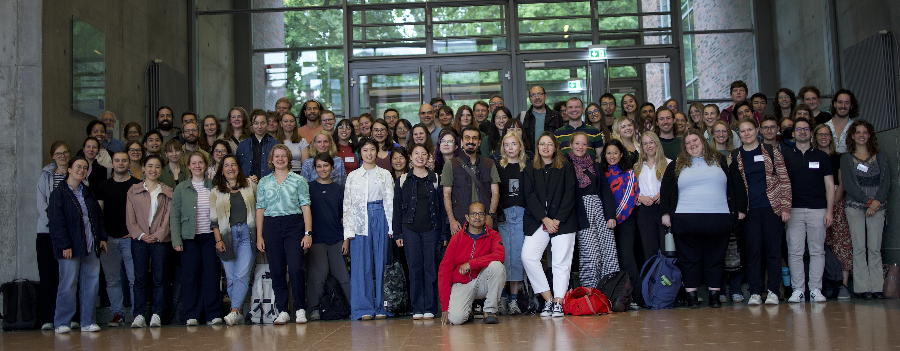

Welcome to the Ninth Summer School on Statistical Methods for Linguistics and Psychology, 25-29 August 2025

Application form
Applications are now closed. Decisions will be announced April 15, 2025.
If you
don't receive a decision by April 16, 2025, please write to us.
Schedule and important organizational details
Download the schedule as a pdf document
here.
Download
this pdf document for some important organizational information.
Important notice
The summer school itself is free. However, many of the bakeries and food places near
the summer school location still require cash payment for food; credit/debit
cards and EC cards won't be accepted so please bring some cash with you.
Dates, location
- Dates: 25-29 August 2025.
- Times: 9AM-5PM daily.
- Location:
The summer school will be held at the Griebnitzsee
campus in Potsdam, at Haus 6. For train connections, consult
bvg.de; the train station near
the campus is called Griebnitzsee Bhf (short for Bahnhof, which means train station).
- Application period: Oct 10, 2024 to April 1, 2025.
- Schedule: Download the schedule as a pdf document here..
Brief history of the summer school, and motivation
The summer school was started by Shravan Vasishth in 2017, and was funded until
2024 as part of a
methods
project within the
SFB 1287. The summer
school aims to fill a gap in statistics education, specifically within the
fields of linguistics and psychology. One goal of the summer school is to
provide comprehensive training in the theory and application of statistics, with
a special focus on the linear mixed model. Another major goal is to make
Bayesian data analysis a standard part of the toolkit for the linguistics and
psychology researcher. Over time, the summer school has evolved to have at least
four parallel streams: foundational and advanced courses in frequentist and
Bayesian statistics. These may be expanded to more parallel sessions in future
editions. We typically admit a total of 120 participants (in 2019, we had some
450 applications). In addition to the all-day courses, we regularly invite
speakers to give lectures on important current issues relating to statistics.
Previous editions of the summer school:
2024,
2023,
2022,
2021,
2020,
2019,
2018,
2017.
Code of conduct
All participants will be expected to follow the (
code
of conduct, taken from
StanCon 2018. In case a
participant has any concerns, please contact any of the following instructors:
Shravan Vasishth, Bruno Nicenboim, or Reinhold Kliegl.
Keynote speakers
- Tuesday (26 August 2025): Ben Bolker
Title: Progress and challenges in open-source
multilevel modeling: opinions of an alien
Abstract:
In parallel with the revolution in machine learning and AI, more
traditional multilevel models are rapidly becoming more flexible,
powerful, and readily available in open-source software. I will try to
present a view that is eclectic and 'alien', i.e. covering a range of
topics from a perspective that differs from that of most of the audience
or other method developers (ecology, little formal training in
statistics). I'll briefly review of the current landscape of mixed
modeling tools, exciting new directions, and open challenges. I will
focus on methods available in R but compare these tools with those
available in Julia and Python, as well as in some commercial software.
Other topics may include model selection, troubleshooting (convergence
and singular-fit problems), and the use of latent variables to fit
nonlinear patterns in data.
- Thursday (28 August 2025): Reinhold Kliegl
Title: Aligning theory and effects with non-canonical specifications of linear mixed models
Abstract:
Inferential statistics in cognitive, behavioral, and social sciences
increasingly rely on (generalized) linear mixed models and Bayesian statistics.
Their canonical application often misses out on insights to be gained by
theory-guided considerations at different levels of model specification.
Theory-based non-canonical specifications relate to (1) the relevance of
transformations of measures and covariates, (2) nested vs crossed designs for
fixed effects and/or the random-effect structure, (3) regression discontinuity
designs, (4) (moderation by) quadratic, cubic, or spline covariates, (5)
selection against degenerate (G)LMMs,(7) correlation parameters for levels and
effects, (8) some caveats about their interpretation, and (9) conditional modes
for prediction of individual (or other group) differences in
(quasi-)experimental effects. Using examples from sport science (e.g., Bähr et
al., 2025; Teich et al., 2025), I illustrate for a subset of the above how sex,
age, body constitution, secular trends (incl. pandemic Covid-19 effects), school
social status, and interactions between these effects relate to the physical
fitness of primary-school children. With a few exceptions, these non-standard
specifications are relevant for a broad range statistical models (e.g.,
Bayesian, structural-equation, latent growth curve models).
-
Bähr, F., et al. (2025). Impact of age, sex, body constitution, and the COVID-19
pandemic on the physical fitness of 38,084 German primary school children. Sci
Rep 15, 11300.
https://doi.org/10.1038/s41598-025-95461-5
- Teich, P., et al. (2025). Association of school social status with COVID-19
pandemic-related changes and post-pandemic rebounds of children’s physical
fitness. Sports Med - Open 11, 41. https://doi.org/10.1186/s40798-025-00838-5.
Courses
- Introduction to Bayesian data analysis (maximum 30 participants). Taught by
Julia Haaf and
Nicole Cruz.
You can decide whether this course is appropriate for you by looking at
a previously taught online version of this course (videos are
available): see
here.
This course is an introduction to Bayesian
modeling, oriented towards linguists and psychologists. Topics to be
covered: Introduction to Bayesian data analysis, Linear Modeling,
Hierarchical Models, and Bayes factors. We will cover these topics within the context of
an applied Bayesian workflow that includes exploratory data analysis,
model fitting, and model checking using prior and posterior predictive checks.
Prerequisites:
Participants are expected to be familiar with frequentist methodology (what
is taught in the foundations course, see below, as well as this online
textbook: here), be
relatively fluent in R usage, and must have some
experience in data analysis, particularly with the R library lme4. Basic
high school (pre-calculus) arithmetic and mathematical fluency is assumed;
for example, you should know what a log is, what an exponent is, and be
able to solve for y in x=log(y/(1-y)). If you are unfamiliar with
frequentist methods, we suggest taking the introductory frequentist course
listed below.
Course Materials
The following freely available online textbook will be used: see here.
A hard-copy of the book is available here.
The course will cover chapters 1-5, and possibly also chapter 13 (Bayes factors).
- Advanced Bayesian data analysis (maximum 30 participants). Taught by Bruno Nicenboim and Himanshu Yadav
This course assumes that participants have some experience in Bayesian
modeling already using brms and want to transition to Stan to learn more
advanced methods and start building simple computational cognitive models.
Participants should have worked through or be familiar with the material in
the first five chapters of our book draft: Introduction to Bayesian
Data Analysis for Cognitive Science. In this course, we will cover
Parts III to V of our book draft: model comparison using Bayes factors and
k-fold cross validation, introduction and relatively advanced models with
Stan, and simple computational cognitive models.
Course Materials
Textbook: see here.
A hard-copy of the book is available here.
We will start from Part III of the book (Advanced models with Stan). Participants are expected to be familiar with the first six chapters.
- Foundational methods in frequentist statistics
(maximum 30 participants). Taught by Daniel
Schad, and João
Veríssimo.
Participants will be expected to have used linear mixed models before, and want to acquire a deeper knowledge of
frequentist foundations, and understand the linear mixed modeling framework more
deeply. Participants are also expected to have fit multiple regressions. We will
cover model selection, contrast coding, with a heavy emphasis on simulations to
compute power and to understand what the model implies. We will work on (at
least some of) the participants' own datasets. This course is not appropriate
for researchers new to R or to frequentist statistics.
Course Materials
Textbook draft here.
- Advanced methods in frequentist statistics with Julia
(maximum 30 participants). Taught by Reinhold
Kliegl, and Phillip Alday.
Applicants must have experience with linear mixed models and be interested
in learning how to carry out such analyses with the Julia-based
MixedModels.jl package) (i.e., the analogue of the R-based lme4
package). MixedModels.jl has some significant advantages stemming from a
faster implementation incorporating several algorithmic advances. The speed
improvements make it easier to fit larger and more complex models as well
as perform the repetitive model fitting necessary for power simulation and
bootstrapping.
We do not expect profound knowledge of Julia from
participants; the necessary subset of knowledge will be taught on the first
day of the course. We do expect a readiness to install Julia and the
confidence that with some basic instruction participants will be able to
adapt prepared Julia scripts for their own data or to adapt some of their
own lme4-commands to the equivalent MixedModels.jl-commands. There is good
interoperability between R and Julia (with RCall on the
Julia side and JuliaCall
on the R side) so that users can continue using R as necessary for e.g.
data wrangling and plotting.
Previous editions' course Materials
-
Course
materials, including lecture notes and worked examples. Please
also see this course website for instructions for installing
necessary software.
- Embrace
Uncertainty in progress book on mixed effects models using
Julia. Several chapters started off as lectures at past SMLPs!
Fees and accommodation
The summer school is free. Participants who are
accepted are expected to arrange their own accommodation. We strongly advise
participants to find a place to stay near Griebnitzsee campus, and not in
Berlin. The reason is that German train personnel tend to go on strike every
year around the time of the summer school. You will be better off if you can get
easily to the Griebnitzsee campus.
Contact details
For any questions regarding this summer school that have not been addressed on
this home page already, please contact
Shravan Vasishth.